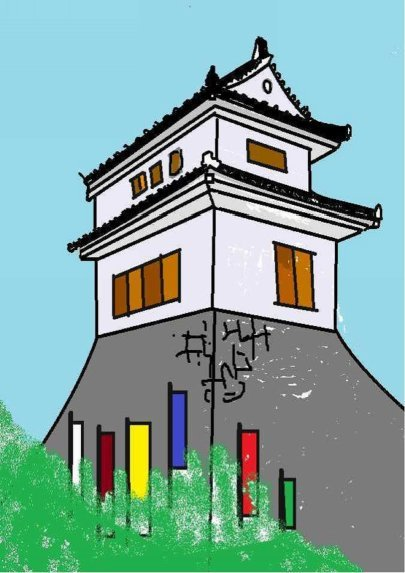
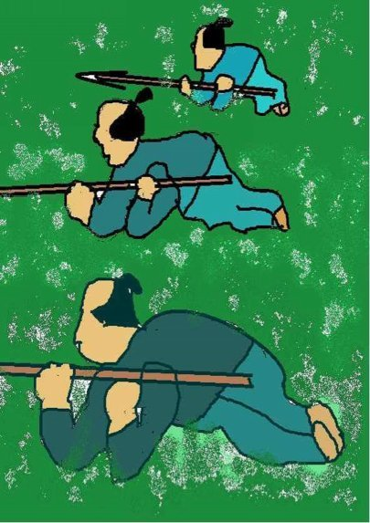
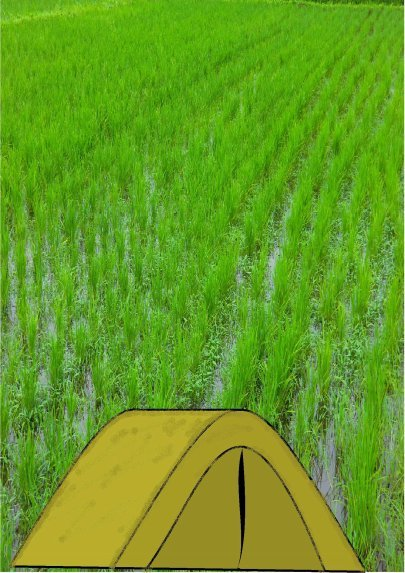
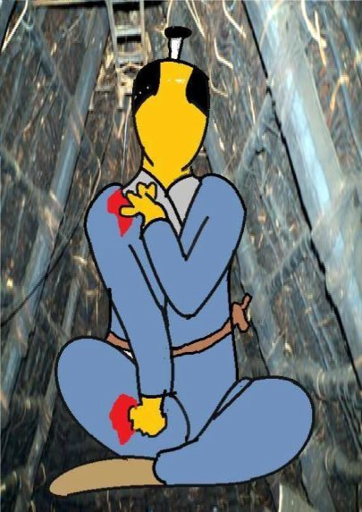

| ⑭落ち武者の姓 | |
| 深川龍 | |
| UNKNOWN (2016) | |
第十四話
昔、竹成と云う所は武成と書いた。今の三重県三重郡菰野町竹成じゃ。隣の千種というところから竹成にかけて首塚、上追上、下追上という地名が続く。
千種城は千種忠顕が南朝方として活躍した千種忠顕の子顕経が築いた。それから二百数十年が経っていた。
織田方の軍勢に攻められた千種城の城兵は早々と城を捨てて竹成の方へ逃げた。千種城側は敵が雲霞の如き大軍と知って、籠城してはとても支えきれぬと初手から思うたのじゃ。

既に昼は過ぎておった。空には暗雲がたれ込め、時折南から北へと春の旋風が駆け抜けていった。千種城の兵は一団となって首塚に差しかかった。首塚には背丈を越える笹や雑草が生い茂っておったので、一旦ここに身を潜めることにしたのじゃ。
「織田の兵共に気づかれぬように草原の中で身を屈めよ。もしも敵が草原の中に潜むわれらに気づいて分け入って来たなったらば予てのように太鼓で合図する。
どんどん、どんどん、どんどんと二つ続けて打てば攻撃の合図じゃったな。
どんどんどんどんどんどんと続けて打てば再び北に向かって逃げる合図と云うてあったが覚えていやるか。」
織田方の軍兵は千種城がもぬけの殻と知るや、これを追って首塚にやって来た。先頭の兵団が草原のほぼ真ん中に来た時じゃった。
どんどん、どんどん、どんどんと太鼓が鳴った。
織田方の軍兵に向かって草むらの中からびゅんびゅんと矢が飛んだ。千種方はいわゆるゲリラ戦に持ち込んだのじゃった。
「伏兵じゃ。油断するな。」
織田方の軍兵はばらばらと倒れたが、何せやって来たのは大軍じゃったから倒されても倒されても次々と押し寄せて来た。やがて首塚の笹や雑草は双方の血で赤く染まった。

どんどんどんどんどんどんと続けて太鼓が鳴った。
千種方の兵は勝手知ったる地元の地理じゃったが、敵わぬとみて再び北に向かって逃げ始めた。
ちょうど下追上まで来た時じゃった。
「待て、向こうからも兵が来る。」
千種方の兵が立ち止まった。相手方は声高に名乗った。
「わしらは員弁の者じゃ。そなたたちは千種城の兵か。」
員弁と言うところは千種から四里ほど北にあった。
「如何にも、織田の兵に追われておる。員弁城の方々、われらにお味方いただけるのか。」
「負けの側に味方して何の得があろうぞ。そなたたちを捕らえれば織田方から褒美がもらえる。」
「千種と員弁は古来より親交を厚くしてきたではないか。われらは員弁城に助けを求めて逃げて来たのじゃ。」
「わしらとて織田の大軍は食い止められぬ。そなたたちを助ければわしらも滅ぶ。」
員弁城の兵たちは千種方の兵に刃を向けた。今度は織田の兵に加えて、員弁の兵たちも敵となったのじゃ。千種方は前後を敵に挟まれて、最早逃げる術を失った。ならば武士らしく敵を斬って斬って斬りまくって斬死するより仕方がない。
「武士は戦で死ぬるが本望、ここは武成り。」
と言ったかどうか。
千種方の太鼓がどんどん、どんどん、どんどんと鳴った。
下追上から竹成のすぐ南隣の野中に至るまでの彼方此方で小競り合いがあり千種方の兵は次第に減って、ついに城主とそれを囲む数人の家臣だけとなった。
「このままでは却って標的にされる。ばらばらになって逃れるのじゃ。予のことは心配要らぬ。」
千種城の城主は一人田んぼの中にある石灰小屋にかくれた。石灰小屋というのはは員弁で採れる石灰をしまうための人の背丈ほどの高さの三角形の屋根だけからなる小さな藁葺き小屋じゃった。

織田方の兵は千種方の残党が隠れていないか、一帯の農家や物置小屋を隈無く調べて廻った。いわゆる落ち武者狩りじゃ。
「もう調べてないのはこの石灰小屋だけじゃ。」
「こんな小さな所では隠れられんぞ。」
「試しにちょっと覗いていったらどうじゃ。」
「敵は捨て身で向かってくる。覗いた途端に中からぐさっとやられるかも知れん。」
「まさかじゃが、小屋の外から槍で突いてみたらどうじゃ。」
「なるほど。」
石灰小屋にかくれておった城主は気が気ではなかった。
やっという掛け声とともに穂先が突っ込まれた。身動きも出来ぬほどの狭い小屋の中じゃった。穂先が太股を貫通した時、城主はくっという小さな悲鳴を上げた。
「何か中から声が聞こえなかったか。」
「いいや、何も。」
城主は槍の柄の部分を握ると、自分の太股を穂先から抜いた。そして素早く穂先に着いた血を拭いた。
「何か手応えがあったぞ。」
「引き抜いてみよ。血がついているかどうかじゃ。」
城主は槍の柄から手を離した。槍は引き抜かれていった。
「血など付いておらん。」
「念のためじゃ、もう一度突いてみよ。」
今度は穂先が左腕を貫いた。城主は歯を食いしばって柄の部分を握り、そっと穂先を抜いた。そして再び素早く穂先に着いた血を拭いた。
「やっぱり、こんな所じゃ誰もおらん。」
織田方の兵は戻って行ったが、城主は槍で太股と左腕を突きぬかれ動くことも出来なんだ。
夕方になり、やがて一晩が過ぎた。翌朝、一人の農夫が石灰小屋にやって来た。

「あっれ、お侍様。どうなされたじゃ。」
「昨日の戦を知っておるであろう。われらが千種城は他国の兵に奪われた。」
「敵は尾張の織田めでござりましたな。」
「予は千種城の城主じゃ。予を助けてくれたならばそちに千種の姓を与え、士分に取り立ててやろう。」
「勿体ねえことでござります。汚い所でござりますが、どうぞ我が家にお越し下され。」
その後、そのお百姓は苗字を貰い、千種姓を名乗り士分じゃと誇りにした。しかし、千種氏の一族は千種の姓を捨て身元を隠したと言う。
菰野町千種と言うところに千種の姓が無く、菰野町竹成に千種の姓があるのはそれが為じゃともいう。
まあ、氏より育ちというから氏姓にこだわることもあるまいが。
(完）
深川龍の
ラゴラ③ 第二幕
ラゴラ④ 第三幕
もお読みください。
- 1 -